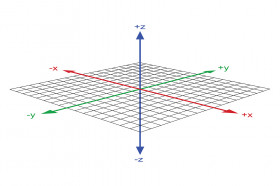
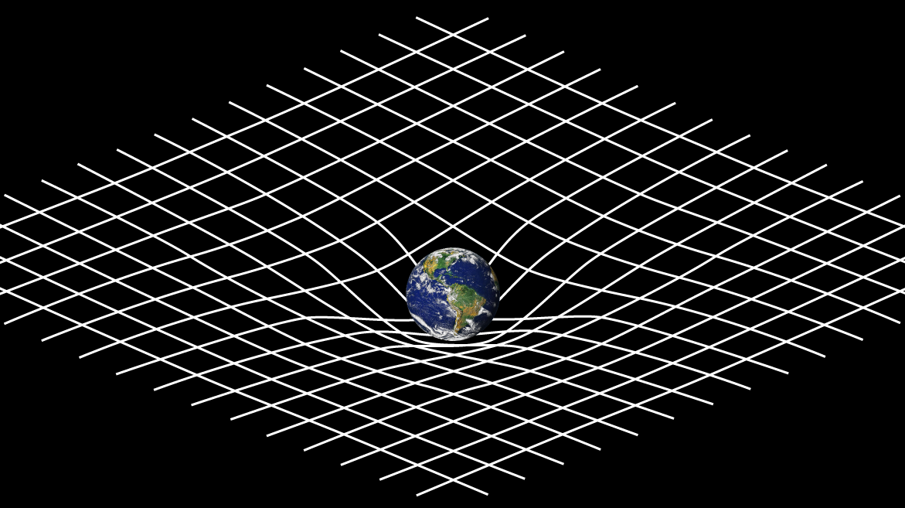
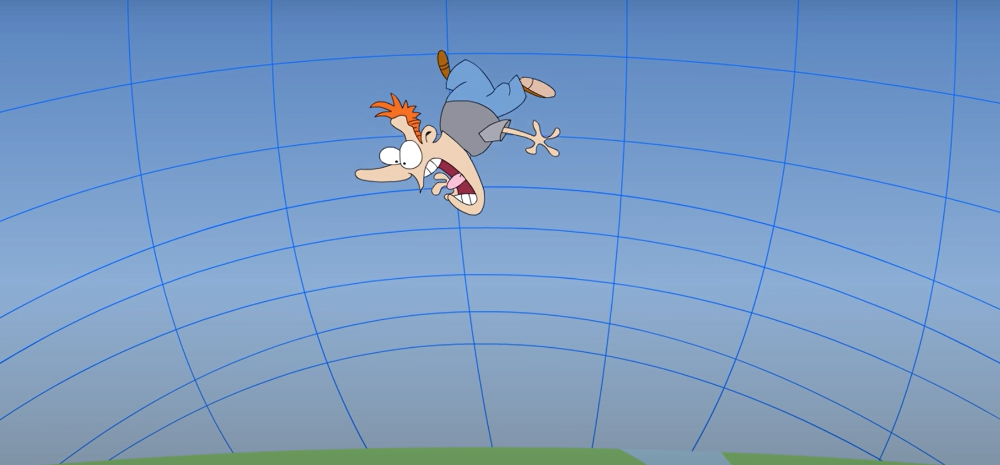
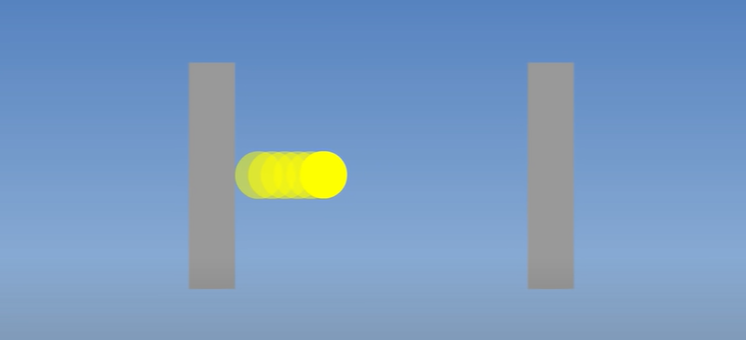
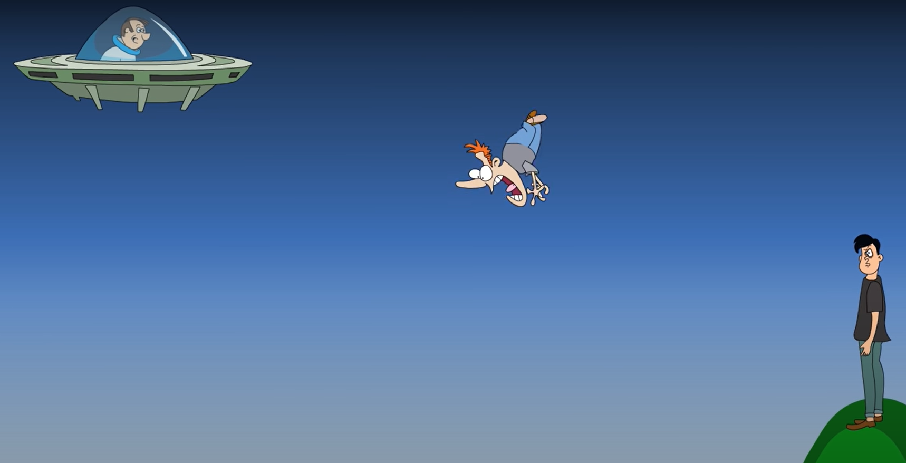
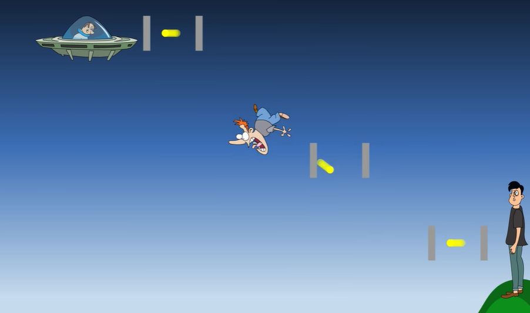

Apparent slowing down of time is one of the strangest side-effects of intense fear…
The Beginning
One evening in the spring of 1905 Albert Einstein, the patent clark in Bern, after wrap-up his days work he decided to board a tram car on his way home. Einstein would often wrap up his work as soon as possible to contemplate the truths of the universe in his free time. It was one of these thought experiments he devised on that tram car that revolutionized modern physics forever.
Thought Experiment
While receding away from the Zytglogge clock tower Einstein imagined and extended his imagination.
What would happen if the tram car were receding at the speed of light ?
He realized that if he were to travel at 186000 miles per second the clocks hands would appear to completely freeze. At the same time Einstein knew that back at the clock tower the hands would tick along at their normal pace. For Einstein time had slowed down.
This thought blew his mind.Einstein concluded that ’the faster you move through space the slower you move through time’.
Motivation
Einstein’s work was heavily influenced by two of the most iconic physicists of all time. First there were the laws of motion discovered by his idol Issac Newton and second were the laws of electromagnetism laid down by James Clerk Maxwell.
Newton’s Observation
Newton’s laws insisted that velocities are never absolute but always relative , so that their magnitudes must be appended by the phrase “with respect to”.
For instance a train travels at 40 km/h with respect to someone at rest. However, it only travels with respect to a train travelling 20 km/h in the same direction or it travels 60 km/h with respect to another train travelling in the opposite direction at 20 km/h. This is also true for the velocities of Earth, the Sun and the and the entire Milky Way galaxy.
Maxwell’s Observation
On the other hand Maxwell found that the speed of an electromagnetic wave such as light is fixed at an exorbitant \(299,792,458\) m/s regardless of who observes it. However, Maxwell’s notion seems incompatible with Newton’s notion of relative velocities.
If Newton’s laws are truly universal , why should the speed of the light be an exception?
Way to Revolution
This presented Einstein with a daunting dilemma. This conflict between the ideas of Newton and Maxwell can be demonstrated with another of Einstein’s brilliant thought experiments.
Einstein imagined himself on a train platform witnessing two lightning bolts strike on either side of him. Now because Einstein stands precisely in the middle of the two strikes he receives the resulting beams of light from both sides at the same time. However, things get more complicated when someone on a passing train views this event while whizzing past Einstein at the speed of light. If the speed of light conforms to the rules of relativity, then the person on the train wouldn’t weakness the lightning strike simultaneously.
Logically the light closure to the man on the train would reach him first.
A measurement of the speed of light made by both men would differ in magnitude, this would contradict an apparently fundamental truth of the universe. Einstein had to make a difficult choice. Either Newton’s laws were incomplete or the speed of light wasn’t a universal constant. Einstein realized that the two notions could coexist with a small tweak in Newton’s laws.
\(2c = \dfrac{d}{t}\)
\(2c = \dfrac{d}{\dfrac{t}{2}}\)
\(2c = \dfrac{2d}{t}\)
\(c = \dfrac {d}{t}\)
To get rid of the discrepancy in the measurements Einstein suggested the time itself for the man of the train must slow down to compensate for the decrease in speed such that the magnitude remains a constant.
Einstein called this absurdity ‘time dilation’ and his new found theory “special relativity”
\(t_0 = t\sqrt{1-v^2/c^2}\)
\(E = mc^2\)
Concept of Space-time
Newton believed the time moved unflinchingly in a single direction forward. Einstein however had just realized the time stretches and contracts varying with velocity. Due to its malleability time like space deserved its own dimension in fact Einstein claimed that the two were one and the same together they formed a four dimensional fabric or continuum called space-time upon which the mundane events of the universe would unfold.

Einstein suggested that massive objects like the Sun didn’t pull bodies like earth with mysterious Inexplicable tug, but rather curved the fabric of space-time around them. Forcing earth to fall down into this steep valley.

Intuitive Explanation
A highly simplified analogy is the dip in a trampoline made by a falling bowling ball. If a marble were placed on that trampoline the marble would immediately roll towards the bowling ball in the center. This is also true for the Earth’s gravity. We’re pinned to the ground because space so distorted by the Earth’s mass pushes us down from above. However, the slump in the fabric around Earth is not uniform and Earth’s gravity grows more intense as we move towards its center where the curvature is at a maximum.
Therefore like the marble on the trampoline an object that falls towards the earth accelerates as it races towards the center of the planet. It falls faster when just above the surface than it does say when it is slightly above the atmosphere. But according to special relativity the faster you move through space the slower you move through time. This means that time runs slower on Earth’s surface then it does above the atmosphere.

Different planets have different masses and the different gravitational strength. They also accelerate objects at different rates as he have learnt this means a variable passage of time.
This what happened in the movie ‘Interstellar’ when the protagonist land on a planet in the proximity of a black hole.
The gravity on the planet is so server that one hour of the surface is equivalent to seven years on the Earth.
Timekeeping Mechanism
To understand how motion effects time let’s considered the simplest timekeeping mechanism. A second passes each time the photon is reflected.


Let’s imagine two people one in a spaceship slightly above Earth’s atmosphere and the second on top of a small hill just above the Earth’s surface. Both are watching a man fall from space towards the ground.
Let’s say that the falling man is carrying the photon clock
What to each of the two man observe as the man falls pass them ?
What they observe is eerily similar to what a stationary person would observe when watching a ball bounce in a moving train ?

As the man falls from the space, the light in his clock would appear to move in triangles to the observers.This would mean that light travels a longer distance consequently stretching the duration of a second. It’s obvious that the length of triangles the light traces and therefore the duration of a second is proportional to the velocity of the falling man.
When we recall that objects closer to the center of the planet fall faster . We can determine the time would appear to pass slower to the man on the hill than it does to the man in the spaceship above. Of course the difference is infinitesimal. The difference between the time measured by clocks at the tops of mountains and at the surface of Earth is a matter of nano seconds.Time dilation affects every clock whether it relies on basic electromagnetism or a complex combination of electromagnetism and Newton’s laws of motion. In fact even biological processes are slowed down.
Yes, that’s right your head is slightly older than your feet.
References:
At the Speed of Light by G.Venkataraman
Relativity: The Special and the General Theory by Albert Einstein